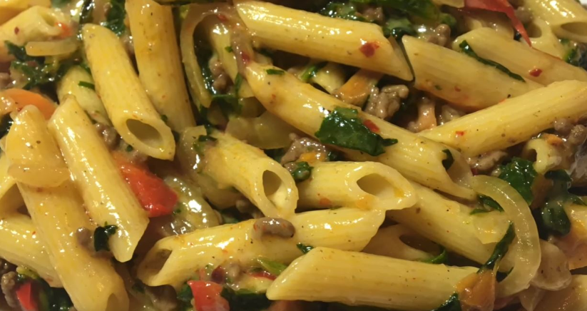

Ingrédients :
- Pâtes (quantité désirée)
- Huile (2 cuillères)
- Épinards
- Condiments au choix (sel, poivre…)
- Une carotte
- 1 poivron rouge et 1 poivron vert
- 1 oignon
- Quelques tranches de fromage
Etapes de préparation :
1. Faire chauffer les pâtes, ne pas hésiter à ajouter de l’huile dans l’eau.
2. Faire cuire la viande hachée avec de l’huile.
3. Mettre des carottes effilées dans la préparation.
4. Mettre le poivron.
5. Ajouter l'oignon.
6. Mettre les épinards dans la préparation.
7. Mettre le fromage en lamelles.
8. Ajouter les pâtes et mélanger abondamment, dégustez !
